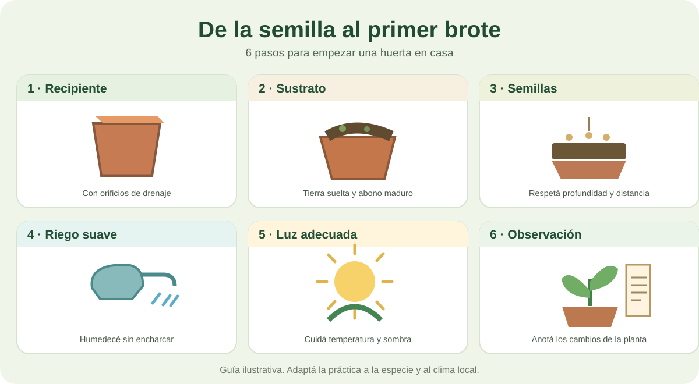

Tu primera huerta en un recipiente
No hace falta disponer de un terreno grande para aprender. Esta es una propuesta educativa que podés adaptar a macetas, cajones o recipientes reutilizados con drenaje.
Importante: las necesidades de siembra, temperatura, luz y agua cambian según la especie. Usá la guía de cultivos y las instrucciones de tu variedad para ajustar los pasos.
Infografía: seis pasos para sembrar

Explicación de cada etapa
- 1
Elegí un recipiente
Usá una maceta o recipiente reutilizado que tenga orificios de drenaje. Colocala donde reciba la luz adecuada para el cultivo.
- 2
Prepará el sustrato
Llená el recipiente con tierra suelta y materia orgánica bien descompuesta. Dejá un pequeño espacio libre en el borde.
- 3
Sembrá según la especie
Colocá semillas sanas respetando la profundidad y separación indicadas para esa variedad. No todas se siembran igual.
- 4
Regá suavemente
Humedecé el sustrato con cuidado, sin arrastrar las semillas. Revisá la humedad antes de volver a regar.
- 5
Cuidá luz y temperatura
Evitá el exceso de calor y las heladas según la especie. Asegurá buena ventilación y luz apropiada para la plántula.
- 6
Observá y registrá
Anotá fechas, aparición de brotes y cambios en las hojas. Si germinan muchas plantas, raleá o trasplantá cuando corresponda.
🌱 Mi cuaderno de observación
Antes de jugar, anotá en una libreta qué sembraste y cómo cambia día a día. Podés usar este ejemplo; no necesitás enviar datos a ninguna página.
| Fecha | Qué observé | Qué hice |
|---|---|---|
| Día 1 | Semillas sembradas | Humedecí el sustrato |
| Día 4 | Revisé la humedad | Regué solo si hacía falta |
| Día 7 | ¿Aparecieron brotes? | Registré cambios y clima |
Los días son ejemplos para registrar observaciones, no fechas garantizadas de germinación.
Ahora elegí qué cultivar
Compará lechuga, tomate, cebolla, zanahoria, albahaca y acelga; después poné a prueba lo aprendido.